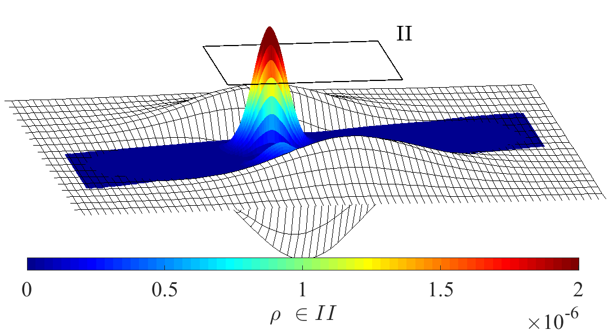

<h1 class="page__title">Publications</h1>

<div style="position:relative; width:100%; margin-bottom:28px; border-radius:8px; overflow:hidden; box-shadow:0 4px 18px rgba(0,0,0,0.13);">
  
  <div style="position:absolute;inset:0;background:linear-gradient(to right, rgba(30,40,80,0.55) 0%, rgba(30,40,80,0.1) 100%); display:flex; align-items:center; padding:0 28px;">
    <span style="color:#fff; font-size:13px; font-style:italic; letter-spacing:0.04em; text-shadow:0 1px 4px rgba(0,0,0,0.5); max-width:300px; line-height:1.5;">Exploring manifolds, flows, and the geometry of data.</span>
  </div>
</div>

<p>An up-to-date list is also available on <a href="https://scholar.google.com/citations?user=JUKtIdkAAAAJ&amp;hl=en" target="_blank">Google Scholar</a>.</p>

<div class="year-heading">2026</div>
<ul class="entry-list">
  <li>
    <a href="https://arxiv.org/abs/2610.17483"><strong>Structure-preserving fidelity diagnostics for partial differential equations</strong></a>
    <span class="entry-authors">K. Flouris</span>
    <span class="entry-venue">arXiv preprint arXiv:2610.17483, 2026</span>
  </li>
  <li>
    <a href="https://www.medrxiv.org/content/10.64898/2026.09.14.26363026"><strong>Calibrated per-pixel uncertainty for low-dose paediatric chest-radiograph denoising at no fidelity cost</strong></a>
    <span class="entry-authors">S.T. Mengistu, K. Flouris</span>
    <span class="entry-venue">medRxiv preprint 2026.09.14.26363026, 2026</span>
  </li>
  <li>
    <a href="https://arxiv.org/abs/2609.15344"><strong>Parameter-Efficient Adaptation of Pretrained Language Models for Time-Series Forecasting</strong></a>
    <span class="entry-authors">T. Kumavat, G. Brunner, K. Flouris</span>
    <span class="entry-venue">arXiv preprint arXiv:2609.15344, 2026</span>
  </li>
  <li>
    <a href="https://arxiv.org/abs/2608.20253"><strong>GENIE: Generative Neural Inference for Epidemics</strong></a>
    <span class="entry-authors">L.M. Guzmán-Rincón, G.R.E. Bradley, J. Kandiah, K. Flouris, P. Liò, P.J. Birrell, A.E. Zarebski, D. De Angelis</span>
    <span class="entry-venue">arXiv preprint arXiv:2608.20253, 2026</span>
  </li>
  <li>
    <a href="https://arxiv.org/abs/2604.03310"><strong>Diffusion Path Alignment for Long-Range Motion Generation and Domain Transitions</strong></a>
    <span class="entry-authors">H. Wang, A. Okupnik, Y. Han, G. Wen, J. Schneider, K. Flouris</span>
    <span class="entry-venue">arXiv preprint arXiv:2604.03310, 2026</span>
  </li>
  <li>
    <a href="https://doi.org/10.1002/mp.70374"><strong>Impact of CT dose on AI performance: A comparison of radiomics, deep, and foundation models in a multicentric anthropomorphic phantom study</strong></a>
    <span class="entry-authors">M. Martín Asiain, M. Amirian, O. Jimenez-del-Toro, C. Aberle, R. Schaer, M. Bach, ..., K. Flouris, et al.</span>
    <span class="entry-venue">Medical Physics, 53(3):e70374, 2026</span>
  </li>
</ul>

<div class="year-heading">2025</div>
<ul class="entry-list">
  <li>
    <a href="https://arxiv.org/abs/2511.00011"><strong>Generative human motion mimicking through feature extraction in denoising diffusion settings</strong></a>
    <span class="entry-authors">A. Okupnik, J. Schneider, K. Flouris</span>
    <span class="entry-venue">arXiv preprint arXiv:2511.00011, 2025</span>
  </li>
  <li>
    <a href="https://arxiv.org/abs/2510.15101"><strong>Operator Flow Matching for Timeseries Forecasting</strong></a>
    <span class="entry-authors">Y.Y.R. Lee, K. Flouris</span>
    <span class="entry-venue">arXiv preprint arXiv:2510.15101, 2025</span>
  </li>
  <li>
    <a href="https://arxiv.org/abs/2509.25206"><strong>Hyperbolic Optimization</strong></a>
    <span class="entry-authors">Y. Wang, K. Flouris</span>
    <span class="entry-venue">arXiv preprint arXiv:2509.25206, 2025</span>
  </li>
  <li>
    <a href="https://arxiv.org/abs/2507.01539"><strong>A Multi-Centric Anthropomorphic 3D CT Phantom-Based Benchmark Dataset for Harmonization</strong></a>
    <span class="entry-authors">M. Amirian, M. Bach, O. Jimenez-del-Toro, C. Aberle, R. Schaer, ..., K. Flouris, et al.</span>
    <span class="entry-venue">arXiv preprint arXiv:2507.01539; dataset on The Cancer Imaging Archive, 2025</span>
  </li>
  <li>
    <a href="https://arxiv.org/abs/2506.10571"><strong>A purely Quantum Generative Modeling through Unitary Scrambling and Collapse</strong></a>
    <span class="entry-authors">Y. Li, J. Chen, T.S. Kumavat, K. Flouris</span>
    <span class="entry-venue">arXiv preprint arXiv:2506.10571, 2025</span>
  </li>
  <li>
    <a href="https://arxiv.org/abs/2507.13789"><strong>Localized FNO for Spatiotemporal Hemodynamic Upsampling in Aneurysm MRI</strong></a>
    <span class="entry-authors">K. Flouris, M. Halter, Y.Y.R. Lee, S. Castonguay, L. Jacobs, P. Dirix, J. Nestmann, S. Kozerke, E. Konukoglu</span>
    <span class="entry-venue">MICCAI Workshop on Reconstruction and Imaging Motion Estimation (RIME 2025), Springer LNCS, 2025</span>
  </li>
  <li>
    <a href="https://arxiv.org/abs/2406.17441"><strong>A Matrix Product State Model for Simultaneous Classification and Generation</strong></a>
    <span class="entry-authors">A. Mossi, B. Žunkovič, K. Flouris</span>
    <span class="entry-venue">Quantum Machine Intelligence, 7(1):48, 2025</span>
  </li>
</ul>

<div class="year-heading">2024</div>
<ul class="entry-list">
  <li>
    <a href="https://ml4physicalsciences.github.io/2024/files/NeurIPS_ML4PS_2024_56.pdf"><strong>Explicit and data-Efficient Encoding via Gradient Flow</strong></a>
    <span class="entry-authors">K. Flouris, A. Volokitin, G. Bredell, E. Konukoglu</span>
    <span class="entry-venue">NeurIPS Workshop on Machine Learning and the Physical Sciences (ML4PS), 2024</span>
  </li>
  <li>
    <a href="https://arxiv.org/abs/2412.00511"><strong>Energy-Based Prior Latent Space Diffusion Model for Reconstruction of Lumbar Vertebrae from Thick Slice MRI</strong></a>
    <span class="entry-authors">Y. Wang, Y.Y.R. Lee, A. Dolfini, M. Reischl, E. Konukoglu, K. Flouris</span>
    <span class="entry-venue">MICCAI Workshop on Deep Generative Models (DGM4MICCAI, Long oral), 2024</span>
  </li>
  <li>
    <a href="https://arodes.hes-so.ch/record/15810/files/Muller_2024_Comparing_stability_and_discriminatory_power.pdf"><strong>Comparing stability and discriminatory power of hand-crafted versus deep radiomics: a 3D-printed anthropomorphic phantom study</strong></a>
    <span class="entry-authors">O. Jimenez-del-Toro, C. Aberle, R. Schaer, M. Bach, K. Flouris, E. Konukoglu, et al.</span>
    <span class="entry-venue">12th European Workshop on Visual Information Processing (EUVIP), 2024</span>
  </li>
</ul>

<div class="year-heading">2023</div>
<ul class="entry-list">
  <li>
    <a href="https://arxiv.org/abs/2310.12743"><strong>Canonical Normalizing Flows for Manifold Learning</strong></a>
    <span class="entry-authors">K. Flouris, E. Konukoglu</span>
    <span class="entry-venue">Advances in Neural Information Processing Systems (NeurIPS), 36, 2023</span>
  </li>
  <li>
    <a href="https://arxiv.org/abs/2304.05939"><strong>Explicitly minimizing the blur error of variational autoencoders</strong></a>
    <span class="entry-authors">G. Bredell, K. Flouris, K. Chaitanya, E. Erdil, E. Konukoglu</span>
    <span class="entry-venue">International Conference on Learning Representations (ICLR), 2023</span>
  </li>
  <li>
    <a href="https://aapm.onlinelibrary.wiley.com/doi/abs/10.1002/mp.16373"><strong>3D-printed iodine-ink CT phantom for radiomics feature extraction: advantages and challenges</strong></a>
    <span class="entry-authors">M. Bach, C. Aberle, A. Depeursinge, O. Jimenez-del-Toro, R. Schaer, K. Flouris, et al.</span>
    <span class="entry-venue">Medical Physics, 50(9):5682–5697, 2023</span>
  </li>
</ul>

<div class="year-heading">2022</div>
<ul class="entry-list">
  <li>
    <a href="https://doi.org/10.1103/PhysRevB.105.235122"><strong>Curvature-induced quantum spin-Hall effect on a Möbius strip</strong></a>
    <span class="entry-authors">K. Flouris, M. Mendoza Jimenez, H.J. Herrmann</span>
    <span class="entry-venue">Physical Review B, 105(23):235122, 2022</span>
  </li>
  <li>
    <a href="https://www.nature.com/articles/s41598-022-08301-1"><strong>Assessing radiomics feature stability with simulated CT acquisitions</strong></a>
    <span class="entry-authors">K. Flouris, O. Jimenez-del-Toro, C. Aberle, M. Bach, R. Schaer, M.M. Obmann, et al.</span>
    <span class="entry-venue">Scientific Reports, 12(1):4732, 2022</span>
  </li>
</ul>

<div class="year-heading">2021</div>
<ul class="entry-list">
  <li>
    <a href="https://journals.lww.com/investigativeradiology/fulltext/2021/12000/The_Discriminative_Power_and_Stability_of.5.aspx"><strong>The discriminative power and stability of radiomics features with computed tomography variations: task-based analysis in an anthropomorphic 3D-printed CT phantom</strong></a>
    <span class="entry-authors">O. Jimenez-del-Toro, C. Aberle, M. Bach, R. Schaer, M.M. Obmann, K. Flouris, et al.</span>
    <span class="entry-venue">Investigative Radiology, 56(12):820–825, 2021</span>
  </li>
</ul>

<div class="year-heading">2020</div>
<ul class="entry-list">
  <li>
    <a href="https://academic.oup.com/mnras/article/491/3/4089/5626364"><strong>The MUSE Atlas of Discs (MAD): Ionized gas kinematic maps and an application to diffuse ionized gas</strong></a>
    <span class="entry-authors">M. den Brok, C.M. Carollo, S. Erroz-Ferrer, ..., K. Flouris, et al.</span>
    <span class="entry-venue">Monthly Notices of the Royal Astronomical Society, 491(3):4089–4107, 2020</span>
  </li>
</ul>

<div class="year-heading">2019</div>
<ul class="entry-list">
  <li>
    <a href="https://www.mdpi.com/2410-3896/4/2/39"><strong>Quantized alternate current on curved graphene</strong></a>
    <span class="entry-authors">K. Flouris, S. Succi, H.J. Herrmann</span>
    <span class="entry-venue">Condensed Matter, 4(2):39, 2019</span>
  </li>
  <li>
    <a href="https://doi.org/10.1142/S0129183119410067"><strong>Landau levels in wrinkled and rippled graphene sheets</strong></a>
    <span class="entry-authors">K. Flouris, M. Mendoza Jimenez, H.J. Herrmann</span>
    <span class="entry-venue">International Journal of Modern Physics C, 30(10):1941006, 2019</span>
  </li>
  <li>
    <a href="https://www.research-collection.ethz.ch/entities/publication/a967cae2-57b2-4d9b-bf52-5eb3b8fc14a6"><strong>Flow and Dirac particles on curved and topological manifolds</strong></a>
    <span class="entry-authors">K. Flouris</span>
    <span class="entry-venue">Doctoral thesis, ETH Zürich, 2019</span>
  </li>
</ul>

<div class="year-heading">2018</div>
<ul class="entry-list">
  <li>
    <a href="https://journals.aps.org/prb/abstract/10.1103/PhysRevB.98.155419"><strong>Confining massless Dirac particles in two-dimensional curved space</strong></a>
    <span class="entry-authors">K. Flouris, M. Mendoza Jimenez, J.D. Debus, H.J. Herrmann</span>
    <span class="entry-venue">Physical Review B, 98(15):155419, 2018</span>
  </li>
  <li>
    <a href="https://doi.org/10.1016/j.compfluid.2018.03.044"><strong>Fluid structure interaction with curved space lattice Boltzmann</strong></a>
    <span class="entry-authors">K. Flouris, M. Mendoza Jimenez, G. Munglani, F.K. Wittel, J.D. Debus, H.J. Herrmann</span>
    <span class="entry-venue">Computers &amp; Fluids, 168:32–45, 2018</span>
  </li>
</ul>

  
